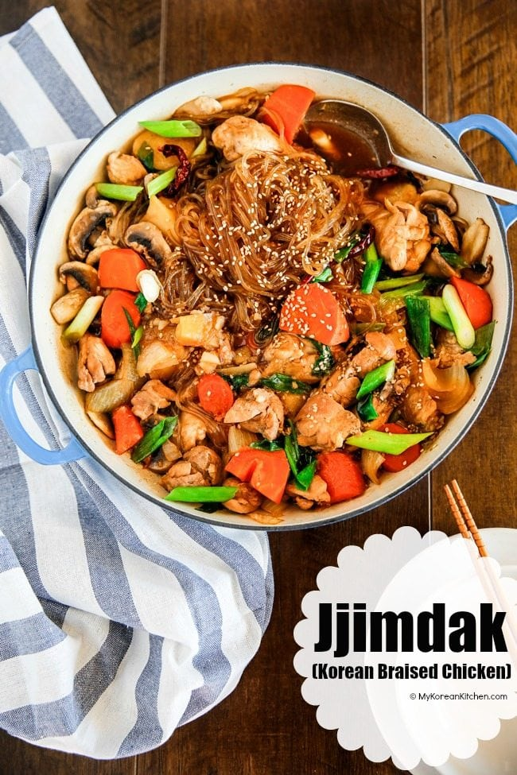
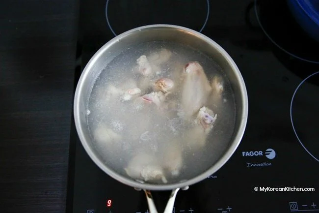
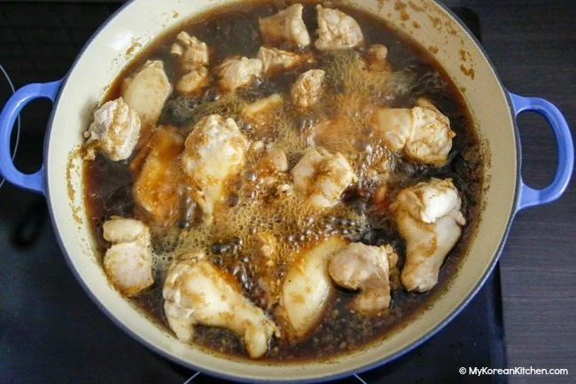
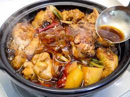

Korean Braised Chicken

Ingredients
Main
- 800g/1.8 pounds chicken cut into medium sized chunks
- 5 cups water to parboil the chicken
- 2 medium potatoes (340g/12 ounces), cut into medium sized chunks
- 1 medium carrot (170g/6 ounces), cut into medium sized chunks
- 1 large brown onion (210g/7.4 ounces), cut into medium sized chunks
- 5 dried small red chillies (2g/0.07 ounces)
- 150g/5.3 ounces Korean glass noodles, soaked in warm water for about 20 mins to hydrate, drain before use
- 3 button mushrooms or shiitake mushrooms (80g/2.8 ounces), thinly sliced
- 1 stalk of green onion (20g/0.7 ounces), diagonally chopped
- 1 tsp roasted seeds
Sauce
- 1 & 1/2 cup water
- 1/3 cup soy sauce
- 2 Tbsp raw sugar or dark brown sugar
- 2 Tbsp rice wine/mirin
- 1 Tbsp honey
- 1 Tbsp msg free oyster sauce
- 1 Tbsp minced garlic
- 1/2 tsp minced ginger
- 2 tsp sesame oil
- 1/4 tsp ground black pepper
Steps
- On medium-high heat, boil the water (5 cups) in a medium sized pot. Once it’s rolling boiling, parboil the chicken for 1 minute to skim off any fat. Drain the water.

- In a clean pot (I used this braising pot), add the chicken and the sauce. Boil them over medium-high heat for about 10 mins, covered.

- Add the potatoes, carrots, onions and chillies and boil for a further 7 mins, covered. Reduce the heat to medium and stir gently to change the position of the chicken and the vegetables. Simmer for a further 8 mins, covered
- Add the glass noodles, mushrooms, and green onions and simmer until the noodles and mushrooms are cooked (about 3 to 5 mins), covered. Stir lightly to make sure the noodles and the mushrooms are mixed with the sauce
- Garnish with the sesame seeds. (You can add additional green onions for extra poppy colour before serving as well.) Serve hot with a bowl of steamed rice

Full Recipe here